My Personal Projects
April Music Player in PyQt6
Not gonna lie. This is the best looking GUI app I've ever created LOL.
Music lovers deserve an immersive experience, and with April Music Player, I aimed to deliver just that. Frustrated by the lack of desktop music players that offer real-time lyric syncing, I developed this application to make learning lyrics easier and more interactive. It’s especially helpful for language learners who want to study song lyrics line by line.
The player offers a sleek lyric display where you can customize the background image and text color to suit your mood. While Version 1 focuses on core functionality, I'm excited to add a note-taking feature during paused sections in the future, making it an even more powerful tool for study and enjoyment.

Explore the April Music Player on GitHub
No Skip Video Player in PyQt6
I hate when I skip through a video and miss important details, but my impatient mind often leads me to do just that. So, I created a video player without media-seeking features. It records the time where you left off when you close the program. The video player also has a timer to stop playback after a set period, allowing you to relax and enjoy a portion of a video during study breaks before returning to your work. It can also be set to always stay on top of other windows.
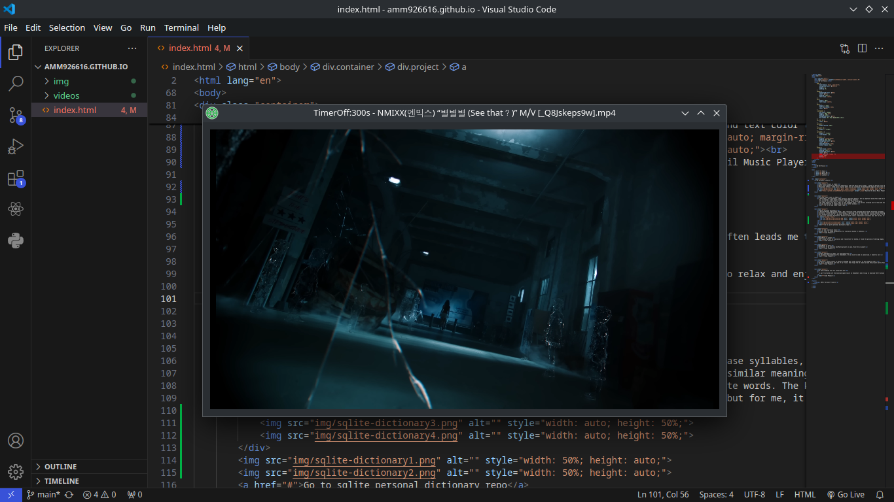 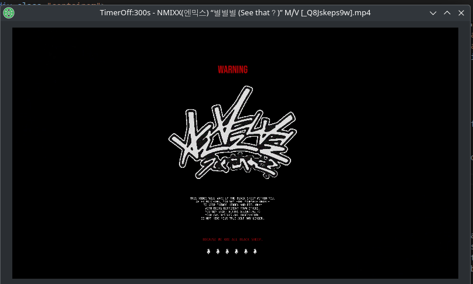Go to No Skip Video Player repo
Sqlite Personal Dictionary
I believe Korean and Burmese share a key similarity: both languages build words from base syllables, each with its own meaning. My INTP brain finds it challenging to memorize vocabulary without breaking it down into these components, which led me to create this project.
Initially, I used Obsidian for note-taking, organizing words by headlines and listing similar meanings beneath each one. However, as my file grew, searching became slow and buggy. I explored other options like Stardict and Goldendict, but they lacked the ability to easily update with new vocabulary. Although I was hesitant to develop my own app due to time constraints and uncertainty about the effort required, I realized all I needed was a simple database and a Python interface. With help from ChatGPT, I created exactly what I needed.
This program functions as a personal dictionary, allowing you to add, search, and delete words. The keyboard shortcuts make it efficient—pressing 'Enter' in the word panel triggers a search, while 'Enter' in the meaning panel adds a new entry. Deleting requires both fields to be filled. I use it to add syllable meanings and guess the meanings of new words based on their components. Thanks to this program, my vocabulary memorization process is now twice as fast.
I call it a 'personal dictionary' because it works like a traditional dictionary app, but for me, it's primarily a tool for breaking down vocabulary into its essential parts."
Go to sqlite personal dictionary repo
All in one scanlation tools
Actually, this is my very first project. I call it AIOS, acronym of "All In One Scanlation". AIOS contains helpful tools of image manipulation for scanlation manhwa or webtoons. This project starts by the idea of EasyPaste
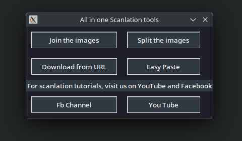View Project
EasyPaste in python
This is the inspiration of AIOS
When I used to work on scanlation and translation for manhwa, I found the process of editing images, removing text, and adding my translations to be tedious. To speed up my workflow, I created this Python project. It detects key events and automatically copies the text from a file when you press Ctrl + V, so all you need to do is paste it into the image.

View Project
EasyPaset in Java
Recreation of my previous EasyPaste project in java. Nicer UI in javafx
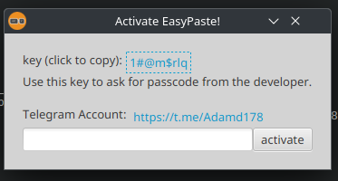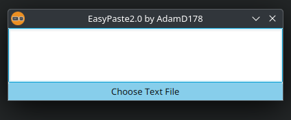
View Project
Simple Chessboard in html, css and javascript
It has basic functionality of a chessboard. It was nice to code in javascript. I learnt a lot.
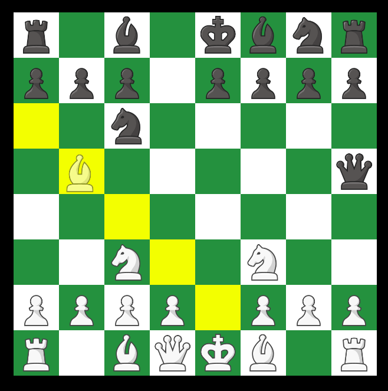View Project
TaskTails, tasks planner in python to manage your study section. It has pomodoro timer.
It was a collaboration with one of my friend. Even tough the UI looks bad and the project barely functions, I learnt a lot of collaboration with other
Not entirely useless tho. It has much more seperate class than any project that I've written
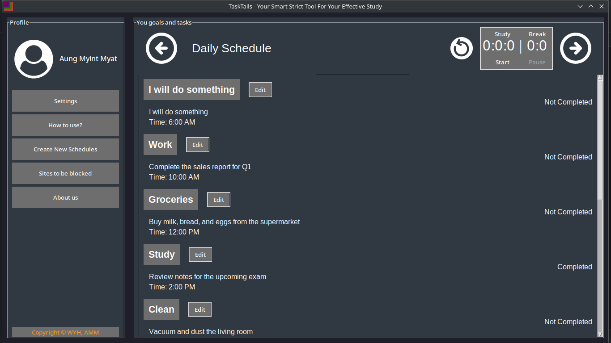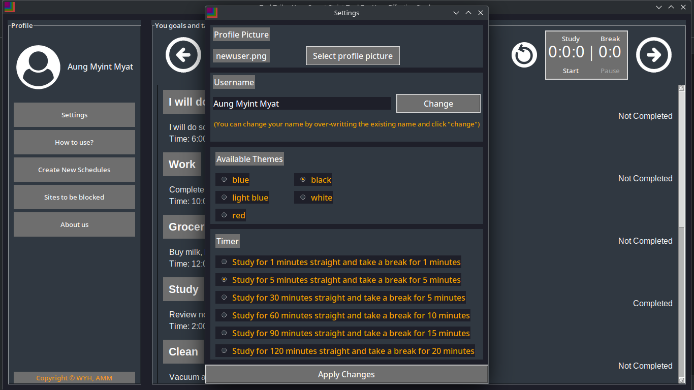
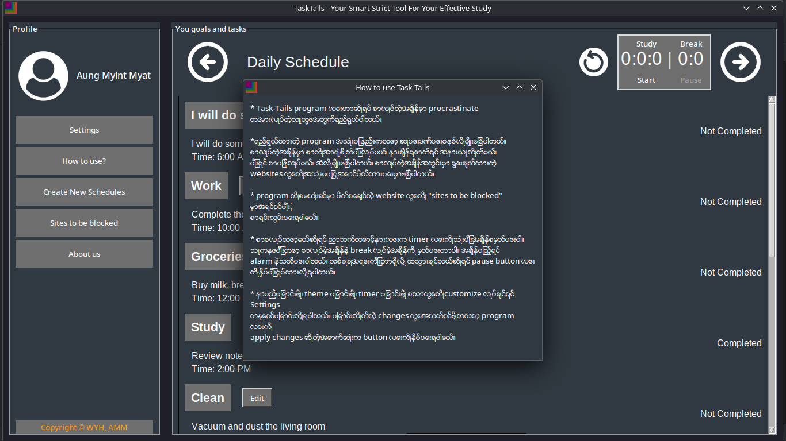
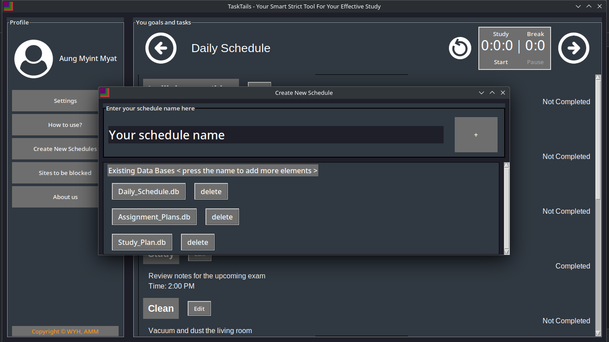
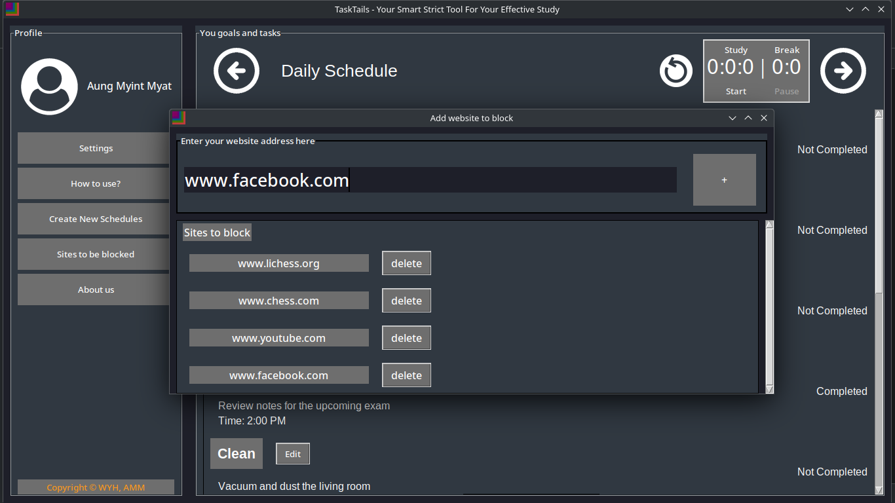
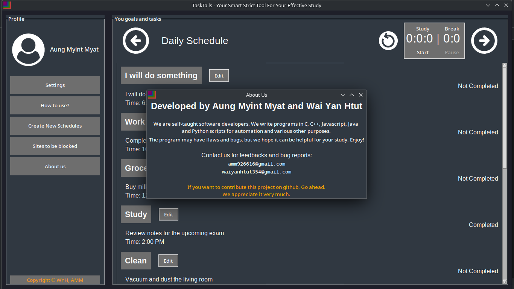
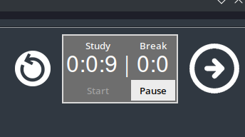
View Project
A web scrapping tool for kitty-kats.net
I got frustrated with the download speed limits on Keep2Share when trying to download MetArt albums from the Kitty-Kats website. This Python script scrapes HD images one by one from redirected hosting sites like 'imagetwist.com,' 'imgspice.com,' and 'turbofile.'
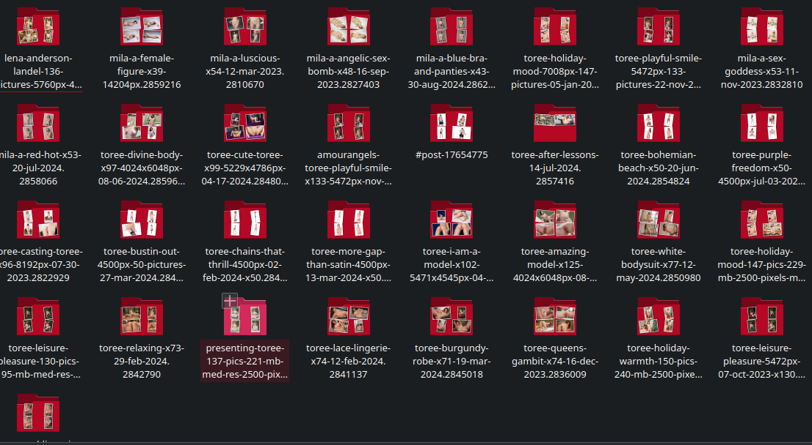View Project